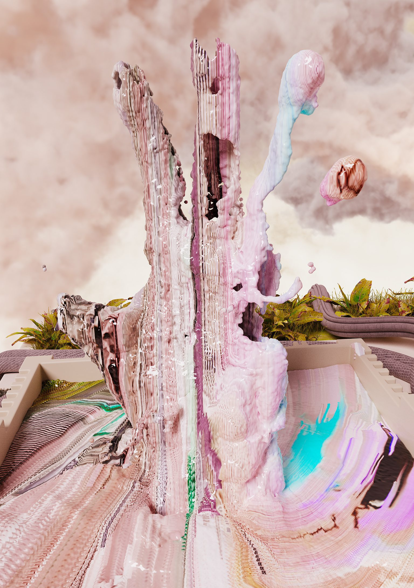
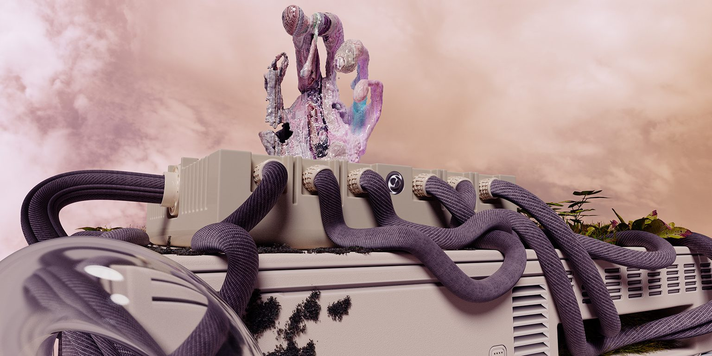
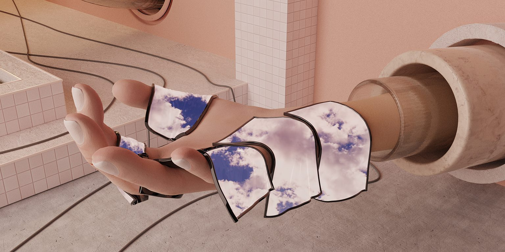
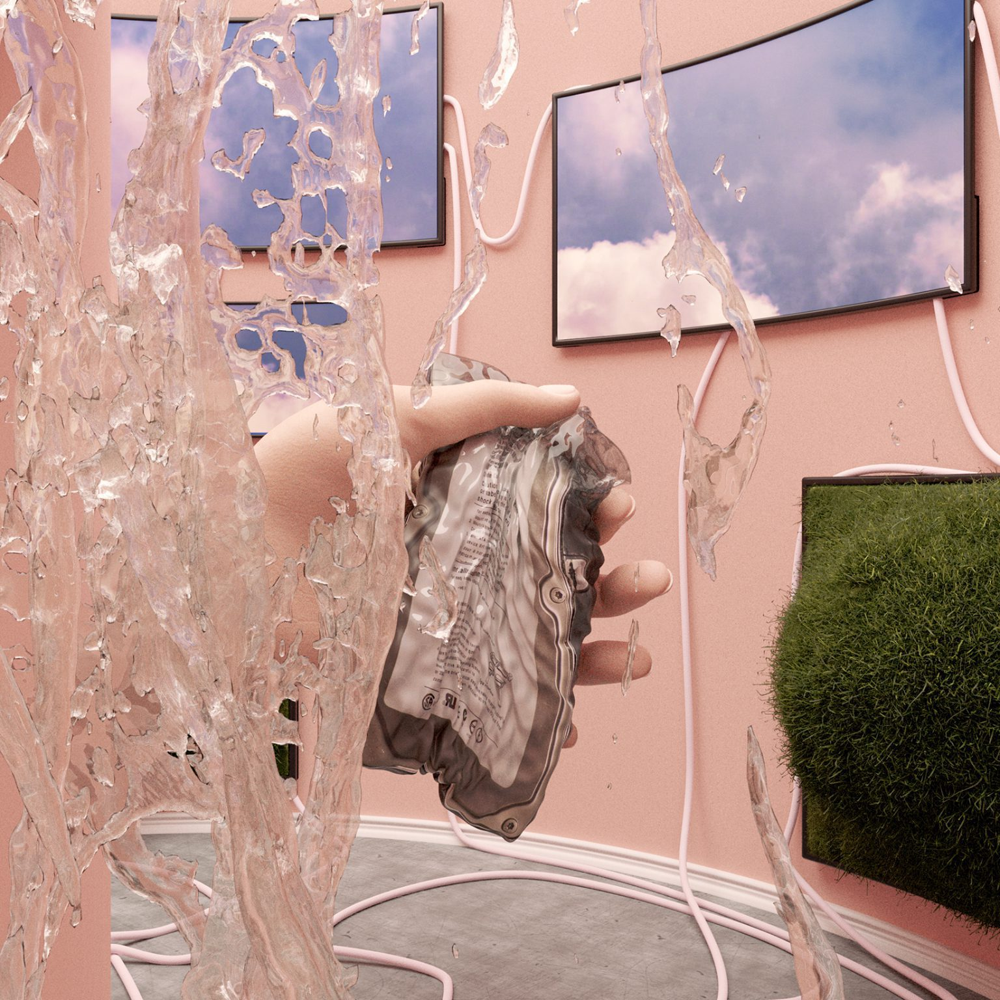
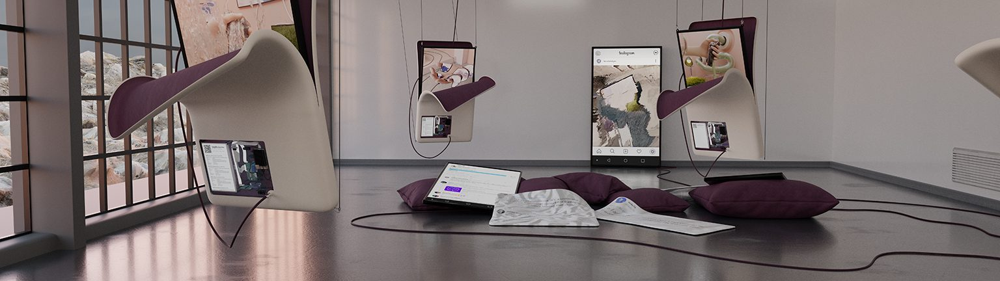
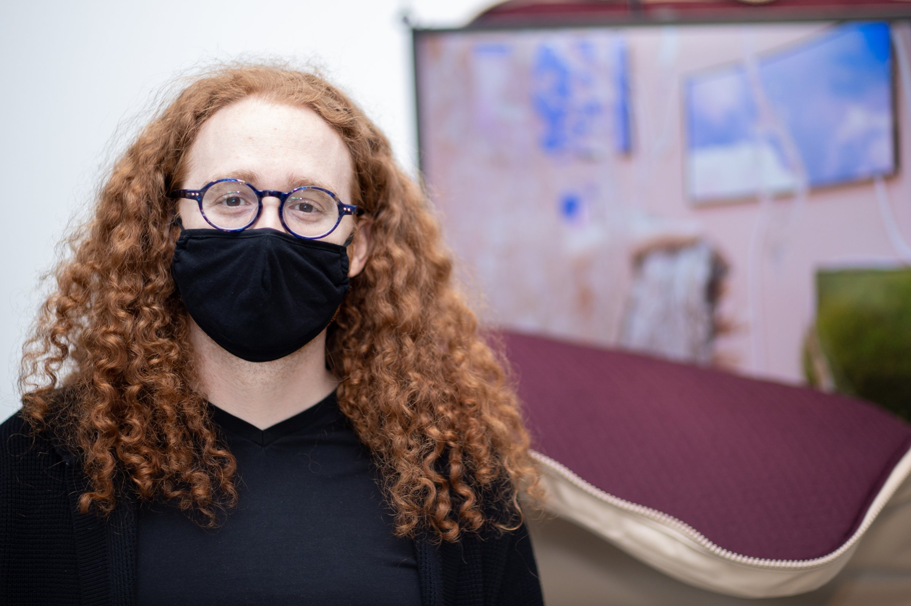
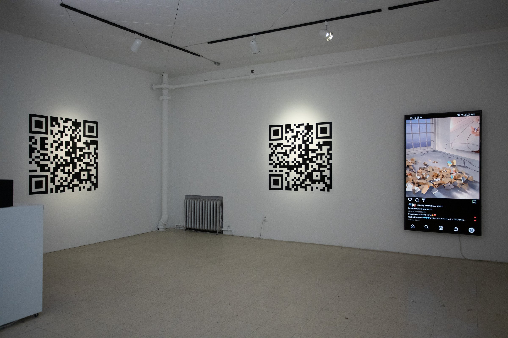
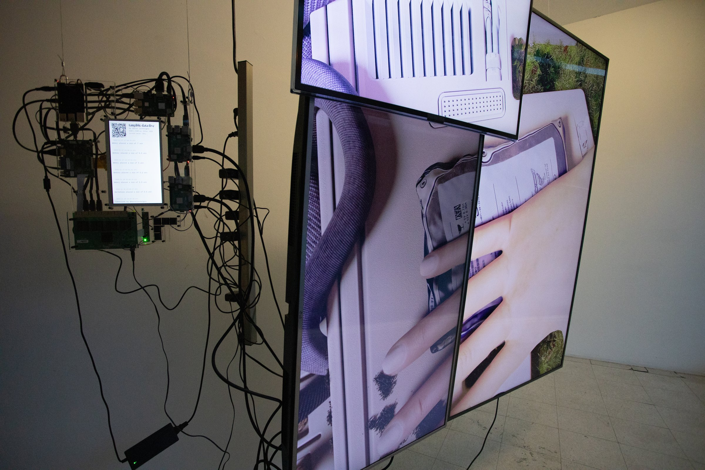

Baron Lanteigne explores our relationship with technology and its infrastructure through installations of modified screens, cables, and electronic devices. His screen-portals straddle the real and virtual, projecting visitors into labyrinthine worlds that connect multiple digital realities.
Lanteigne acts as a digital chameleon. He emerges from the depths of the internet—infiltrating cyber-communities, absorbing their visual languages through virtual collaborations—and slips between mediums with the natural ease of a native. His animations are intentionally dense loops conceived for a new generation of internet-native viewers, too detailed to consume in a single viewing but saturated and surreal enough to go viral. Distributed on social media, the works accumulate viewer reactions that feed back into subsequent iterations, making the audience an active participant in their evolution. In the gallery, these loops inhabit modified consumer electronics, their housings opened and rewired to reveal the mechanisms at work, recovering their aesthetic potential.
The VR component extends this investigation into infinite digital space. A dichotomy of container and content lies at the heart of the work: the screen-portal is simultaneously subject and medium. Visitors are projected into an overloaded environment that reflects the awkwardness of immature interfaces, the clumsy thresholds we use to access the virtual. Lanteigne repurposes these everyday devices to test their limits, not to advance technology but to develop its symbolic image.

Once unidirectional, our relationship with screens has transformed; the object is more versatile than ever. Alienating at moments, this intermediary has the potential to make us forget the physical world entirely. Lanteigne takes this post-humanist premise and runs with it, diverting consumer electronics from their intended purpose and pushing them until they crack open into something new.



Lanteigne’s physical installations of modified screens and cables occupied the gallery alongside the VR component, creating a dialogue between tangible infrastructure and its virtual extension.


